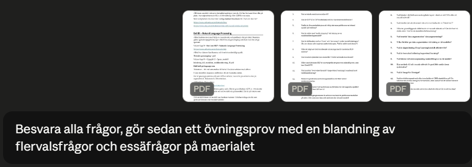
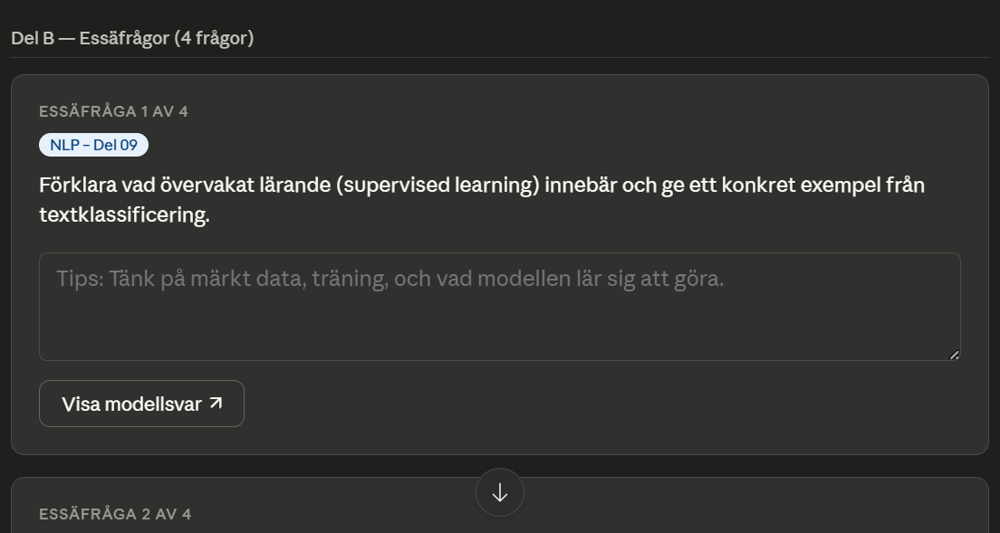

Verktyget
Claude.ai
Länk: https://claude.ai
Utvecklat av: Anthropic
Claude är en avancerad generativ AI med ett av de största kontextfönstren på marknaden, hög resonemangsförmåga och stark betoning på säkerhet och faktatrogenhet.
Exempel 1 – Interaktivt övningsprov i Religion
Jag gav Claude en sammanfattning och bad den skapa ett komplett övningsprov.
"Ge mig ett exempelprov på detta:"


Exempel 2 – Analys av kursmaterial (AI-kurs)
Jag laddade upp flera PDF-filer och bad Claude besvara instuderingsfrågor samt skapa ett interaktivt övningsprov.





Test av självkritik
"Kan du själv hitta några brister i dessa exempelfrågor där info från pdf-filerna ej prövas?"


Min slutliga analys
Styrkor:
- Mycket stort kontextfönster – utmärkt på att hantera hela kursmaterial
- Skapar strukturerade och interaktiva övningsprov av hög kvalitet
- Imponerande självkritisk förmåga
- Hög textkvalitet och naturligt språk
- Bra balans mellan kreativitet och faktatrogenhet
Svagheter:
- Kan utelämna delar av materialet om prompten inte är tillräckligt tydlig
- Gratisversionen har strikta begränsningar
- Kräver ibland flera uppföljande prompts för optimalt resultat
Sammanfattning: Claude.ai är en mycket stark allround-AI som presterar i toppklass inom akademiskt arbete och pedagogiskt material. Den är ett av de bästa verktygen för elever och studenter som vill arbeta effektivt med stora mängder information.